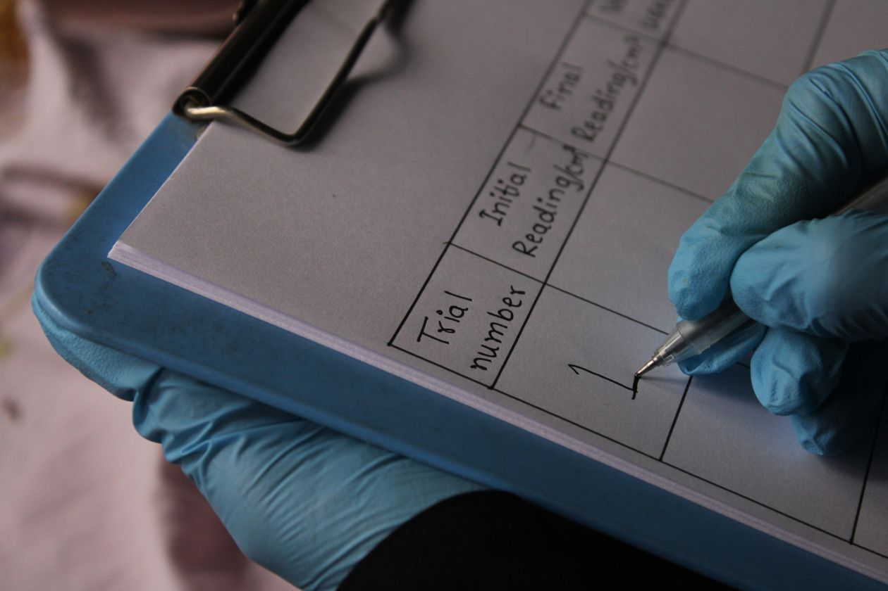

Review docket · D.01 — the practice
The screen is part of the science.
I am Dr Naomi Osei, a geneticist. I review DNA synthesis before it happens: construct designs checked for yield arithmetic, sequences screened against the regulated-agent lists, and synthesis failures traced to the step where the numbers stopped working. My clients are industrial biocatalysis programmes and academic research groups who would rather hear a problem from me than from a failed run — or a regulator.
- Engagement
- Construct design review, industrial biocatalysis
- Screening
- Complete — before design discussion, as always
- Finding
- Yield failure traced to length vs grade, not the design
- Status
- In review
- Sequences
- Held inside the review process. Never on this website.
Most synthesis failures are arithmetic
An oligonucleotide is built one base at a time, and no coupling step is perfect. If each step succeeds with efficiency c, the fraction of product that comes off the column full-length is approximately c(n−1) for an oligo of n bases. That single line of arithmetic explains most of the “mystery failures” I am hired to look at. Run it before you order, not after.
| Grade | Per-step coupling efficiency, c | Typical use |
|---|---|---|
| Standard | 0.985 | Short oligos, primers |
| High-efficiency | 0.990 | Mid-length constructs |
| Premium | 0.995 | Long oligos, assembly fragments |
The Yield Calculator
Reads its efficiencies from Table 1 above — the tool and the table cannot disagree.
Synthesis grade
Oligo length, n
Quick lengths
Full-length fraction
Share of crude product that is the full-length oligo, before purification.
The consequence is a purification problem, stated plainly: everything that is not full-length must be separated out or carried into your experiment as truncated contaminants. As the fraction falls, purification stops being a step and becomes the project. The cheapest yield improvement is usually a shorter design or a better grade — decided on paper, where changes are free.
Services, as a register
Four services, one order of operations: screening is not a service you can decline. It is the first line of every engagement, charged like the work it is.
Sequence screening & compliance
Every sequence checked against the standard regulated-agent lists before design work. Refusals reported through the proper channels.
Construct design review
Designs reviewed for synthesisability, assembly strategy and yield arithmetic before an order is placed.
Yield troubleshooting
Failing syntheses traced to the step the arithmetic points at — length, grade, purification load — with a costed fix.
Synthesis QC audit
Independent audit of a facility's QC standards: what is checked, what is assumed, what the records would show an inspector.

The refusal register
Printed here so nobody has to ask twice, and so no deadline, budget or introduction can be used to negotiate it. If your project falls in this register, the answer is already in print.
Pathogen work of any kind. No design, screening advice or troubleshooting for work on pathogens — the practice's clients are industrial and academic programmes with identified facilities, and this is not one of its services.
Toxin work. No constructs involving toxins or toxin-production pathways, in whole or in part.
Enhancement of transmissibility or virulence. No work whose purpose is to make an organism spread better or harm more. There is no research framing that changes this.
Anything matching the regulated-agent lists. Sequences matching the standard lists are refused at screening and reported through the proper channels. The screening fee is still charged — screening is the work.
Unscreened or anonymous work. No expedited bypass, no “screen it later”, no engagements from clients who cannot identify their institution and facility.
“I have never seen a synthesis fail for a mysterious reason. I have seen hundreds fail for an arithmetic one — and a handful that should never have been ordered at all.”
What a review costs
The fee shape, published. What moves the price: construct count and screening depth first — then review days. What never moves it: the answer. A refusal costs exactly what an approval costs, because the screening is the same work.
| Line | Basis | Rate |
|---|---|---|
| Sequence screening | Per construct | €180 |
| Design review | Per day | €1,250 |
| Yield & QC troubleshooting | Per day | €1,100 |
| Screening & review report | Fixed, per engagement | €450 |
The Estimator
Reads its rates from Table 2 above. An estimate of the review, not a quote for synthesis — synthesis is priced by your provider.
Constructs for screening
Design review days
Yield & QC days
Estimate
Every engagement includes the fixed report line — the findings exist in writing or they do not exist.
Bring the design before you bring the order.
Enquiries ask for your organisation and the type of work only. Sequence details are never sent through a website form — screening happens inside the review process.